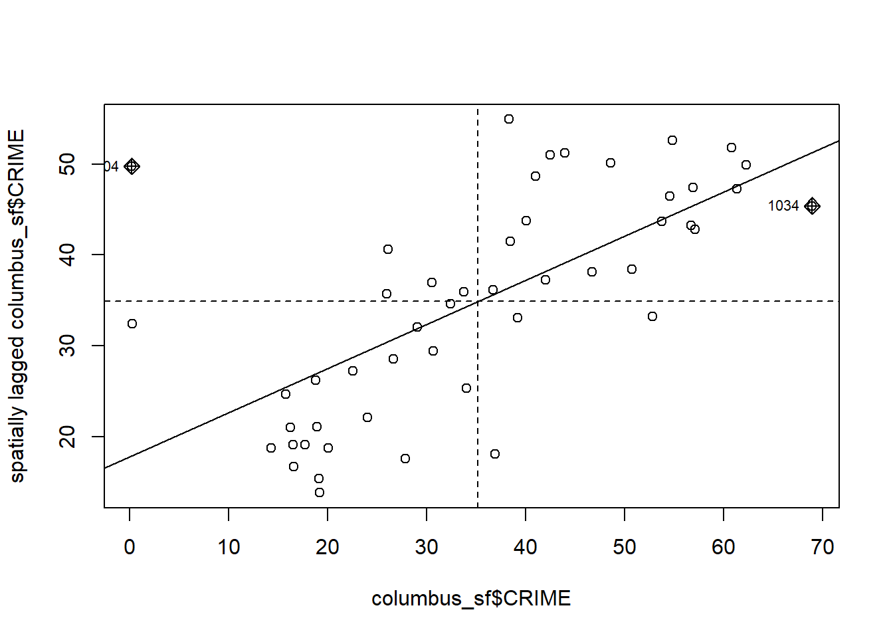
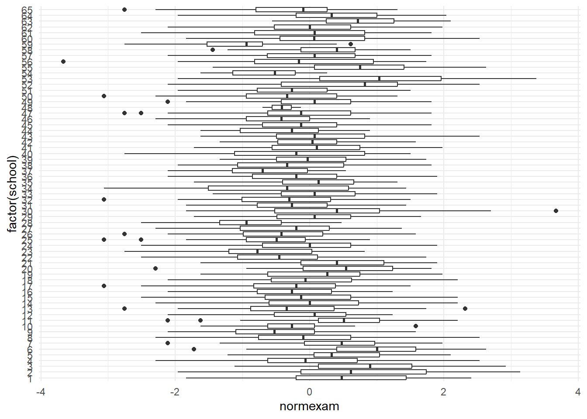
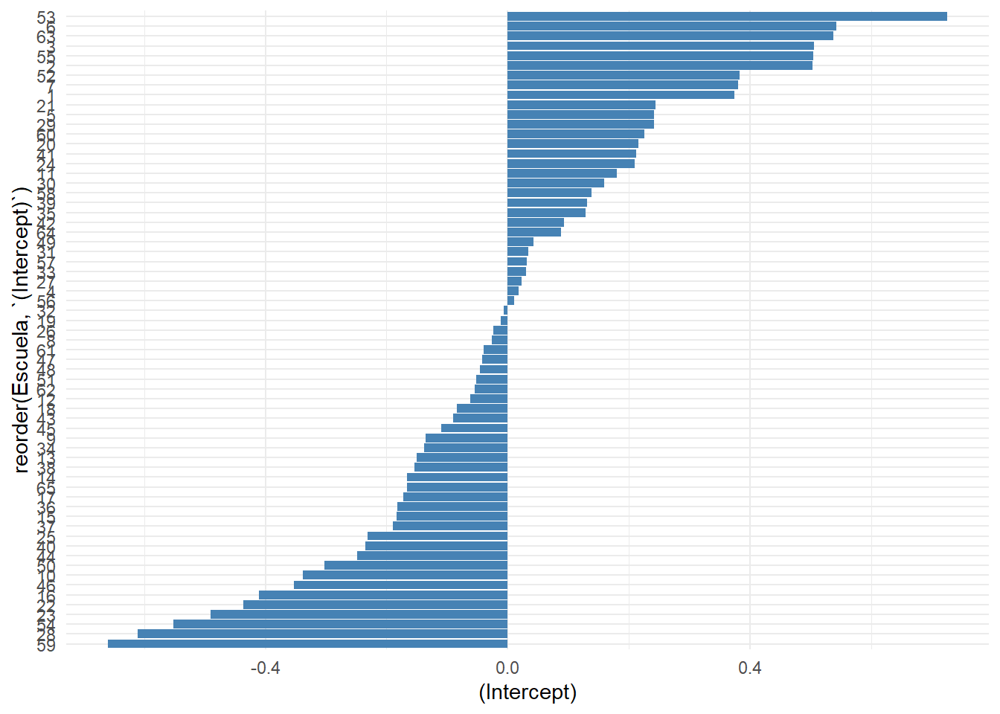
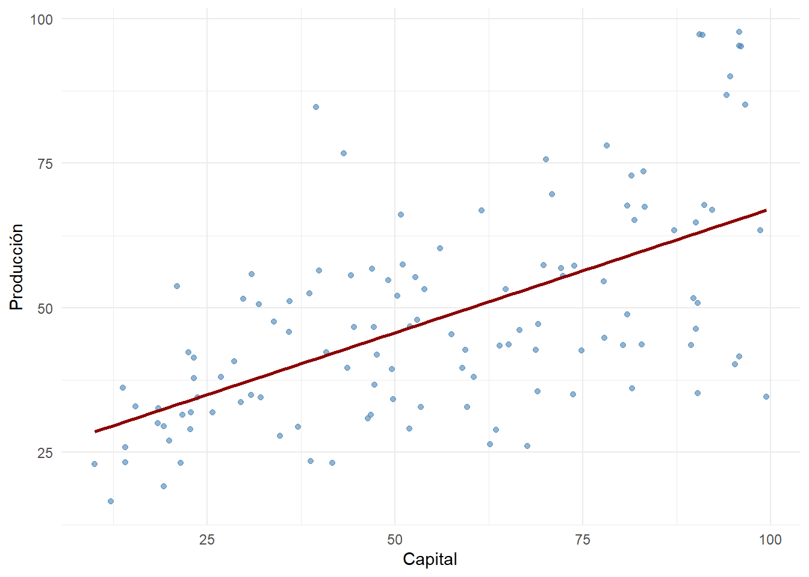
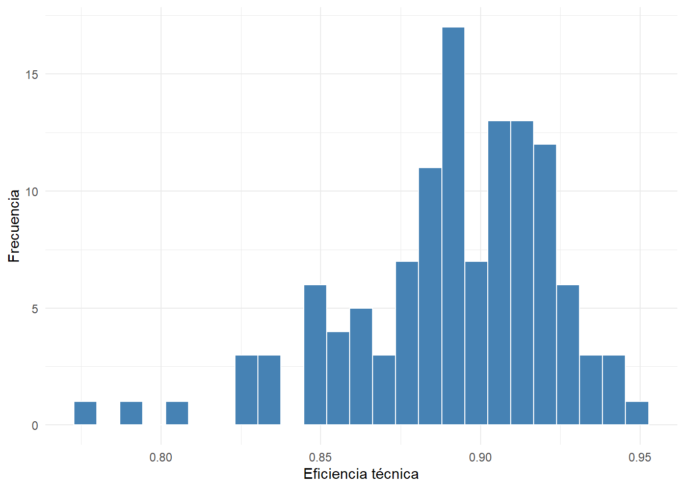

library(sf)
library(spdep)
library(spatialreg)
library(spData)
library(tidyverse)
library(knitr)29 Modelos espaciales y extensiones modernas
Objetivos de aprendizaje
Al finalizar esta sección, el lector será capaz de:
- Comprender el concepto de dependencia espacial.
- Construir matrices de pesos espaciales.
- Calcular el índice de Moran.
- Identificar autocorrelación espacial.
- Estimar un modelo SAR básico.
- Interpretar resultados espaciales.
29.1 Introducción
En los capítulos anteriores asumimos que las observaciones eran independientes.
Sin embargo, en numerosos fenómenos económicos, sociales y territoriales esta condición no se cumple.
Por ejemplo:
Desempleo entre provincias vecinas.
Precios inmobiliarios entre barrios.
Productividad agrícola entre cantones.
Contaminación entre ciudades.Cuando las observaciones cercanas tienden a parecerse entre sí aparece la denominada dependencia espacial (Anselin, 1988).
29.2 ¿Qué es la dependencia espacial?
La dependencia espacial implica que el valor observado en una ubicación puede estar influenciado por valores observados en ubicaciones vecinas.
Formalmente:
Todo está relacionado con todo,
pero los objetos cercanos
están más relacionados
que los distantes.Este principio es conocido como la Primera Ley de la Geografía de Tobler.
29.3 Cargando librerías
29.4 Cargando la base espacial
Utilizaremos la base columbus incluida en spData.
data(
"columbus",
package = "spData"
)
data(
"col.gal.nb",
package = "spData"
)
columbus_sf <- sf::st_read(
system.file(
"shapes/columbus.gpkg",
package = "spData"
),
quiet = TRUE
)
vecinos <- col.gal.nb29.5 Explorando la base
glimpse(
columbus_sf
)Rows: 49
Columns: 21
$ AREA <dbl> 0.309441, 0.259329, 0.192468, 0.083841, 0.488888, 0.283079,…
$ PERIMETER <dbl> 2.440629, 2.236939, 2.187547, 1.427635, 2.997133, 2.335634,…
$ COLUMBUS_ <dbl> 2, 3, 4, 5, 6, 7, 8, 9, 10, 11, 12, 13, 14, 15, 16, 17, 18,…
$ COLUMBUS_I <dbl> 5, 1, 6, 2, 7, 8, 4, 3, 18, 10, 38, 37, 39, 40, 9, 36, 11, …
$ POLYID <dbl> 1, 2, 3, 4, 5, 6, 7, 8, 9, 10, 11, 12, 13, 14, 15, 16, 17, …
$ NEIG <int> 5, 1, 6, 2, 7, 8, 4, 3, 18, 10, 38, 37, 39, 40, 9, 36, 11, …
$ HOVAL <dbl> 80.467, 44.567, 26.350, 33.200, 23.225, 28.750, 75.000, 37.…
$ INC <dbl> 19.531, 21.232, 15.956, 4.477, 11.252, 16.029, 8.438, 11.33…
$ CRIME <dbl> 15.725980, 18.801754, 30.626781, 32.387760, 50.731510, 26.0…
$ OPEN <dbl> 2.850747, 5.296720, 4.534649, 0.394427, 0.405664, 0.563075,…
$ PLUMB <dbl> 0.217155, 0.320581, 0.374404, 1.186944, 0.624596, 0.254130,…
$ DISCBD <dbl> 5.03, 4.27, 3.89, 3.70, 2.83, 3.78, 2.74, 2.89, 3.17, 4.33,…
$ X <dbl> 38.80, 35.62, 39.82, 36.50, 40.01, 43.75, 33.36, 36.71, 43.…
$ Y <dbl> 44.07, 42.38, 41.18, 40.52, 38.00, 39.28, 38.41, 38.71, 35.…
$ NSA <dbl> 1, 1, 1, 1, 1, 1, 1, 1, 1, 1, 1, 1, 1, 1, 1, 1, 1, 1, 1, 0,…
$ NSB <dbl> 1, 1, 1, 1, 1, 1, 1, 1, 1, 1, 1, 1, 1, 1, 1, 1, 1, 1, 1, 1,…
$ EW <dbl> 1, 0, 1, 0, 1, 1, 0, 0, 1, 1, 0, 0, 0, 0, 1, 0, 1, 0, 0, 1,…
$ CP <dbl> 0, 0, 0, 0, 0, 0, 0, 0, 0, 0, 1, 1, 1, 1, 1, 1, 0, 1, 1, 0,…
$ THOUS <dbl> 1000, 1000, 1000, 1000, 1000, 1000, 1000, 1000, 1000, 1000,…
$ NEIGNO <dbl> 1005, 1001, 1006, 1002, 1007, 1008, 1004, 1003, 1018, 1010,…
$ geom <POLYGON> POLYGON ((8.624129 14.23698..., POLYGON ((8.25279 14.23…Interpretación
Cada observación corresponde a un área geográfica de la ciudad de Columbus.
29.6 Visualización espacial
plot(
st_geometry(
columbus_sf
)
)
Interpretación
Cada polígono representa una unidad espacial.
29.7 Construcción de vecinos
La dependencia espacial requiere identificar relaciones de vecindad.
29.8 Resumen de vecinos
tibble(
Area = 1:length(vecinos),
Vecinos =
sapply(
vecinos,
length
)
) |>
summarise(
Promedio =
mean(Vecinos),
Minimo =
min(Vecinos),
Maximo =
max(Vecinos)
) |>
kable(
caption = "Resumen de vecindad"
)| Promedio | Minimo | Maximo |
|---|---|---|
| 4.693878 | 2 | 10 |
Interpretación
Cada área posee un conjunto de vecinos espaciales que influirá en el análisis.
29.9 Matriz de pesos espaciales
pesos <- nb2listw(
vecinos,
style = "W"
)29.10 Índice de Moran
El índice de Moran evalúa autocorrelación espacial.
moran.test(
columbus_sf$CRIME,
pesos
)
Moran I test under randomisation
data: columbus_sf$CRIME
weights: pesos
Moran I statistic standard deviate = 5.3427, p-value = 4.578e-08
alternative hypothesis: greater
sample estimates:
Moran I statistic Expectation Variance
0.485770914 -0.020833333 0.008991121 Interpretación
Hipótesis nula:
No existe autocorrelación espacial.Valores p pequeños indican dependencia espacial significativa.
29.11 Diagrama de Moran
moran.plot(
columbus_sf$CRIME,
pesos
)
Interpretación
La pendiente refleja el grado de autocorrelación espacial.
29.12 Modelo SAR
Cuando existe dependencia espacial podemos estimar un modelo autorregresivo espacial.
modelo_sar <- lagsarlm(
CRIME ~ INC + HOVAL,
data = columbus_sf,
listw = pesos
)29.13 Resultados del modelo SAR
broom::tidy(
modelo_sar
) |>
kable(
digits = 4,
caption = "Modelo SAR"
)| term | estimate | std.error | statistic | p.value |
|---|---|---|---|---|
| rho | 0.4039 | 0.1207 | 3.3459 | 0.0008 |
| (Intercept) | 46.8514 | 7.3148 | 6.4051 | 0.0000 |
| INC | -1.0735 | 0.3109 | -3.4533 | 0.0006 |
| HOVAL | -0.2700 | 0.0901 | -2.9957 | 0.0027 |
Interpretación
Los coeficientes representan efectos directos mientras que el parámetro espacial captura la dependencia entre áreas vecinas.
29.14 Conclusión práctica
En esta primera parte aprendimos a:
- Reconocer dependencia espacial.
- Construir matrices de pesos.
- Calcular el índice de Moran.
- Interpretar autocorrelación espacial.
- Estimar un modelo SAR.
29.15 Introducción
En los capítulos anteriores asumimos que todas las observaciones pertenecían a un mismo nivel de análisis.
Sin embargo, en muchas investigaciones los datos poseen una estructura jerárquica.
Por ejemplo:
Estudiantes dentro de escuelas.
Pacientes dentro de hospitales.
Trabajadores dentro de empresas.
Ciudadanos dentro de provincias.Cuando existe esta estructura anidada, los modelos tradicionales pueden subestimar errores estándar y producir inferencias incorrectas (Gelman & Hill, 2007).
29.16 ¿Qué es un modelo multinivel?
Un modelo multinivel permite analizar simultáneamente:
Variación entre individuos
+
Variación entre gruposLa idea central consiste en reconocer que observaciones pertenecientes al mismo grupo tienden a parecerse entre sí.
29.17 Cargando librerías
library(lme4)
library(mlmRev)
library(tidyverse)
library(broom.mixed)
library(knitr)29.18 Cargando la base de datos
Utilizaremos la base Exam incluida en el paquete mlmRev.
data(
"Exam",
package = "mlmRev"
)
datos_exam <- Exam29.19 Explorando la base
glimpse(
datos_exam
)Rows: 4,059
Columns: 10
$ school <fct> 1, 1, 1, 1, 1, 1, 1, 1, 1, 1, 1, 1, 1, 1, 1, 1, 1, 1, 1, 1, 1…
$ normexam <dbl> 0.2613242, 0.1340672, -1.7238820, 0.9675862, 0.5443412, 1.734…
$ schgend <fct> mixed, mixed, mixed, mixed, mixed, mixed, mixed, mixed, mixed…
$ schavg <dbl> 0.1661752, 0.1661752, 0.1661752, 0.1661752, 0.1661752, 0.1661…
$ vr <fct> mid 50%, mid 50%, mid 50%, mid 50%, mid 50%, mid 50%, mid 50%…
$ intake <fct> bottom 25%, mid 50%, top 25%, mid 50%, mid 50%, bottom 25%, t…
$ standLRT <dbl> 0.6190592, 0.2058022, -1.3645760, 0.2058022, 0.3711052, 2.189…
$ sex <fct> F, F, M, F, F, M, M, M, F, M, M, M, M, M, M, F, F, M, M, F, F…
$ type <fct> Mxd, Mxd, Mxd, Mxd, Mxd, Mxd, Mxd, Mxd, Mxd, Mxd, Mxd, Mxd, M…
$ student <fct> 143, 145, 142, 141, 138, 155, 158, 115, 117, 113, 112, 137, 1…Interpretación
Cada observación corresponde a un estudiante.
Los estudiantes están agrupados dentro de escuelas.
29.20 Número de escuelas
datos_exam |>
summarise(
Escuelas =
n_distinct(
school
)
) |>
kable(
caption = "Número de escuelas"
)| Escuelas |
|---|
| 65 |
29.21 Número de estudiantes
datos_exam |>
summarise(
Estudiantes = n()
) |>
kable(
caption = "Número de estudiantes"
)| Estudiantes |
|---|
| 4059 |
29.22 Visualización jerárquica
ggplot(
datos_exam,
aes(
x = factor(
school
),
y = normexam
)
) +
geom_boxplot() +
coord_flip() +
theme_minimal()
Interpretación
Existen diferencias importantes entre escuelas.
Esto sugiere la presencia de variabilidad grupal.
29.23 Modelo lineal tradicional
Comenzaremos ignorando la estructura jerárquica.
modelo_lm <- lm(
normexam ~ standLRT,
data = datos_exam
)29.24 Resultados del modelo lineal
tidy(
modelo_lm
) |>
kable(
digits = 4,
caption = "Modelo lineal tradicional"
)| term | estimate | std.error | statistic | p.value |
|---|---|---|---|---|
| (Intercept) | -0.0012 | 0.0126 | -0.0942 | 0.9249 |
| standLRT | 0.5951 | 0.0127 | 46.7441 | 0.0000 |
Interpretación
El puntaje de ingreso (standLRT) presenta una asociación positiva con el rendimiento académico.
29.25 Modelo multinivel básico
Ahora permitimos que cada escuela tenga su propio intercepto.
modelo_ml <- lmer(
normexam ~
standLRT +
(1 | school),
data = datos_exam
)29.26 Resultados del modelo multinivel
tidy(
modelo_ml,
effects = "fixed"
) |>
kable(
digits = 4,
caption = "Coeficientes fijos"
)| effect | term | estimate | std.error | statistic |
|---|---|---|---|---|
| fixed | (Intercept) | 0.0023 | 0.0404 | 0.0576 |
| fixed | standLRT | 0.5633 | 0.0125 | 45.1804 |
Interpretación
El coeficiente de standLRT representa el efecto promedio entre todas las escuelas.
29.27 Componentes de varianza
as.data.frame(
VarCorr(
modelo_ml
)
) |>
select(
grp,
vcov
) |>
kable(
digits = 4,
caption = "Componentes de varianza"
)| grp | vcov |
|---|---|
| school | 0.0938 |
| Residual | 0.5659 |
Interpretación
La varianza asociada a las escuelas indica cuánto difieren los interceptos entre instituciones.
29.28 Efectos aleatorios
ranef(
modelo_ml
)$school |>
head() |>
tibble::rownames_to_column(
"Escuela"
) |>
kable(
digits = 4,
caption = "Primeros efectos aleatorios"
)| Escuela | (Intercept) |
|---|---|
| 1 | 0.3744 |
| 2 | 0.5030 |
| 3 | 0.5049 |
| 4 | 0.0182 |
| 5 | 0.2411 |
| 6 | 0.5422 |
Interpretación
Cada escuela presenta una desviación específica respecto al promedio general.
29.29 Visualización de efectos aleatorios
efectos_escuela <- ranef(
modelo_ml
)$school |>
tibble::rownames_to_column(
"Escuela"
)
ggplot(
efectos_escuela,
aes(
x = reorder(
Escuela,
`(Intercept)`
),
y = `(Intercept)`
)
) +
geom_col(
fill = "steelblue"
) +
coord_flip() +
theme_minimal()
Interpretación
Las escuelas con valores positivos presentan rendimientos superiores al promedio esperado.
29.30 Comparación de modelos
tibble(
Modelo = c(
"Lineal",
"Multinivel"
),
AIC = c(
AIC(modelo_lm),
AIC(modelo_ml)
)
) |>
kable(
digits = 2,
caption = "Comparación mediante AIC"
)| Modelo | AIC |
|---|---|
| Lineal | 9766.51 |
| Multinivel | 9376.77 |
Interpretación
Menores valores de AIC indican mejor ajuste relativo.
29.31 ¿Cuándo utilizar modelos multinivel?
Los modelos multinivel son apropiados cuando existen:
- Datos agrupados.
- Dependencia dentro de grupos.
- Estructuras jerárquicas.
- Variación entre organizaciones.
- Variación territorial.
29.32 Aplicaciones frecuentes
tibble(
Area = c(
"Educación",
"Salud",
"Economía",
"Políticas públicas",
"Mercado laboral"
),
Ejemplo = c(
"Estudiantes y escuelas",
"Pacientes y hospitales",
"Empresas y sectores",
"Ciudadanos y municipios",
"Trabajadores y empresas"
)
) |>
kable(
caption = "Aplicaciones multinivel"
)| Area | Ejemplo |
|---|---|
| Educación | Estudiantes y escuelas |
| Salud | Pacientes y hospitales |
| Economía | Empresas y sectores |
| Políticas públicas | Ciudadanos y municipios |
| Mercado laboral | Trabajadores y empresas |
29.33 Conclusión práctica
En esta sección aprendimos a:
- Reconocer estructuras jerárquicas.
- Estimar modelos multinivel.
- Interpretar efectos fijos.
- Interpretar efectos aleatorios.
- Analizar componentes de varianza.
- Comparar modelos jerárquicos.
En la siguiente sección estudiaremos modelos de frontera estocástica para medir eficiencia técnica y productiva.
29.34 Frontera estocástica y medición de eficiencia
29.35 Introducción
Hasta ahora hemos utilizado modelos orientados a explicar relaciones entre variables. Sin embargo, en muchos contextos el interés principal consiste en responder una pregunta diferente:
¿Qué tan eficiente es una unidad productiva?Los modelos de frontera estocástica permiten estimar eficiencia técnica comparando el desempeño observado con una frontera de producción (Kumbhakar et al., 2015).
29.36 Cargando librerías
library(frontier)
library(tidyverse)
library(knitr)
library(broom)29.37 Creación de base simulada reproducible
Para asegurar que el capítulo renderice correctamente en cualquier equipo, construiremos una base simulada de producción. La base sigue la lógica de una función Cobb-Douglas con capital, trabajo, ruido aleatorio e ineficiencia técnica.
set.seed(
123
)
datos_sfa <- tibble(
capital = runif(
120,
min = 10,
max = 100
),
labour = runif(
120,
min = 5,
max = 80
),
error = rnorm(
120,
mean = 0,
sd = 0.15
),
ineficiencia = abs(
rnorm(
120,
mean = 0,
sd = 0.25
)
)
) |>
mutate(
output =
exp(
1 +
0.45 * log(capital) +
0.35 * log(labour) +
error -
ineficiencia
)
)29.38 Explorando la base
glimpse(
datos_sfa
)Rows: 120
Columns: 5
$ capital <dbl> 35.88198, 80.94746, 46.80792, 89.47157, 94.64206, 14.1000…
$ labour <dbl> 53.592011, 28.986546, 28.079001, 21.482572, 32.711665, 78…
$ error <dbl> 0.017646990, -0.142121192, -0.073583617, -0.038413829, 0.…
$ ineficiencia <dbl> 0.19715549, 0.12554968, 0.37401517, 0.28432591, 0.0447629…
$ output <dbl> 45.83680, 48.80977, 31.51244, 43.51298, 90.02329, 23.2403…Interpretación
La base contiene una variable de producción (output) y dos insumos productivos (capital y labour). Además, incluye componentes simulados de error e ineficiencia para fines pedagógicos.
29.39 Resumen descriptivo
datos_sfa |>
select(
output,
capital,
labour
) |>
summary() |>
as.data.frame() |>
kable(
caption = "Resumen descriptivo de producción e insumos"
)| Var1 | Var2 | Freq |
|---|---|---|
| output | Min. :16.48 | |
| output | 1st Qu.:34.54 | |
| output | Median :44.20 | |
| output | Mean :48.24 | |
| output | 3rd Qu.:56.76 | |
| output | Max. :97.67 | |
| capital | Min. :10.06 | |
| capital | 1st Qu.:34.51 | |
| capital | Median :53.23 | |
| capital | Mean :55.97 | |
| capital | 3rd Qu.:78.80 | |
| capital | Max. :99.48 | |
| labour | Min. : 5.785 | |
| labour | 1st Qu.:24.914 | |
| labour | Median :40.968 | |
| labour | Mean :42.195 | |
| labour | 3rd Qu.:56.905 | |
| labour | Max. :78.923 |
Interpretación
El resumen permite verificar que existe variabilidad suficiente en producción, capital y trabajo para estimar una función de producción.
29.40 Relación entre capital y producción
ggplot(
datos_sfa,
aes(
x = capital,
y = output
)
) +
geom_point(
alpha = 0.6,
color = "steelblue"
) +
geom_smooth(
method = "lm",
se = FALSE,
color = "darkred"
) +
theme_minimal() +
labs(
x = "Capital",
y = "Producción"
)
Interpretación
El gráfico muestra una asociación positiva entre capital y producción. Esta relación es consistente con la lógica de una función de producción.
29.41 Función de producción convencional
Antes de estimar eficiencia técnica, construiremos una regresión convencional.
modelo_lm_sfa <- lm(
log(output) ~
log(capital) +
log(labour),
data = datos_sfa
)29.42 Resultados de la regresión convencional
broom::tidy(
modelo_lm_sfa
) |>
kable(
digits = 4,
caption = "Función de producción convencional"
)| term | estimate | std.error | statistic | p.value |
|---|---|---|---|---|
| (Intercept) | 0.7920 | 0.2081 | 3.8059 | 2e-04 |
| log(capital) | 0.4487 | 0.0370 | 12.1238 | 0e+00 |
| log(labour) | 0.3514 | 0.0374 | 9.3972 | 0e+00 |
Interpretación
Los coeficientes representan elasticidades de producción. Un coeficiente positivo indica que aumentos en el insumo se asocian con aumentos en la producción.
29.43 Estimación de frontera estocástica
Ahora estimaremos una frontera estocástica. A diferencia de la regresión convencional, este modelo separa el error aleatorio de la ineficiencia técnica.
modelo_sfa <- frontier::sfa(
log(output) ~
log(capital) +
log(labour),
data = datos_sfa
)29.44 Resultados del modelo SFA
summary(
modelo_sfa
)Error Components Frontier (see Battese & Coelli 1992)
Inefficiency decreases the endogenous variable (as in a production function)
The dependent variable is logged
Iterative ML estimation terminated after 7 iterations:
log likelihood values and parameters of two successive iterations
are within the tolerance limit
final maximum likelihood estimates
Estimate Std. Error z value Pr(>|z|)
(Intercept) 0.901982 0.231748 3.8921 9.939e-05 ***
log(capital) 0.448768 0.036449 12.3123 < 2.2e-16 ***
log(labour) 0.353937 0.037962 9.3234 < 2.2e-16 ***
sigmaSq 0.064074 0.035175 1.8216 0.06852 .
gamma 0.349945 0.644889 0.5426 0.58738
---
Signif. codes: 0 '***' 0.001 '**' 0.01 '*' 0.05 '.' 0.1 ' ' 1
log likelihood value: 9.750757
cross-sectional data
total number of observations = 120
mean efficiency: 0.8909109 Interpretación
El modelo estima una frontera de producción. Los coeficientes de capital y trabajo indican cómo se relacionan los insumos con la producción potencial. Los parámetros adicionales del modelo permiten separar ruido estadístico e ineficiencia técnica.
29.45 Eficiencia técnica estimada
eficiencia <- efficiencies(
modelo_sfa
)29.46 Resumen de eficiencia
tibble(
Eficiencia = as.numeric(
eficiencia
)
) |>
summarise(
Minimo = min(
Eficiencia
),
Promedio = mean(
Eficiencia
),
Maximo = max(
Eficiencia
)
) |>
kable(
digits = 4,
caption = "Resumen de eficiencia técnica"
)| Minimo | Promedio | Maximo |
|---|---|---|
| 0.7764 | 0.8909 | 0.949 |
Interpretación
La eficiencia técnica toma valores entre 0 y 1. Valores cercanos a 1 indican unidades más próximas a la frontera eficiente.
29.47 Distribución de eficiencia
tibble(
eficiencia = as.numeric(
eficiencia
)
) |>
ggplot(
aes(
x = eficiencia
)
) +
geom_histogram(
bins = 25,
fill = "steelblue",
color = "white"
) +
theme_minimal() +
labs(
x = "Eficiencia técnica",
y = "Frecuencia"
)
Interpretación
El histograma permite identificar si la mayoría de unidades se encuentran cerca o lejos de la frontera eficiente.
29.48 Ranking de eficiencia
tibble(
Unidad = 1:length(
eficiencia
),
Eficiencia = as.numeric(
eficiencia
)
) |>
arrange(
desc(
Eficiencia
)
) |>
slice_head(
n = 10
) |>
kable(
digits = 4,
caption = "Unidades más eficientes"
)| Unidad | Eficiencia |
|---|---|
| 44 | 0.9490 |
| 81 | 0.9409 |
| 19 | 0.9398 |
| 5 | 0.9384 |
| 29 | 0.9375 |
| 54 | 0.9342 |
| 16 | 0.9323 |
| 76 | 0.9305 |
| 11 | 0.9304 |
| 104 | 0.9279 |
Interpretación
Las unidades ubicadas en los primeros lugares presentan los mayores niveles de eficiencia técnica estimada.
29.49 Comparación entre regresión y frontera estocástica
tibble(
Modelo = c(
"Regresión convencional",
"Frontera estocástica"
),
Objetivo = c(
"Estimar relación promedio",
"Estimar producción potencial y eficiencia"
),
Error = c(
"Un solo componente de error",
"Ruido aleatorio e ineficiencia"
)
) |>
kable(
caption = "Comparación entre regresión convencional y frontera estocástica"
)| Modelo | Objetivo | Error |
|---|---|---|
| Regresión convencional | Estimar relación promedio | Un solo componente de error |
| Frontera estocástica | Estimar producción potencial y eficiencia | Ruido aleatorio e ineficiencia |
Interpretación
La regresión convencional estima una relación promedio. La frontera estocástica permite evaluar qué tan cerca se encuentra cada unidad de su producción potencial.
29.50 Comparación de modelos avanzados
tibble(
Modelo = c(
"Espacial",
"Multinivel",
"Frontera estocástica"
),
Objetivo = c(
"Analizar dependencia geográfica",
"Analizar estructuras jerárquicas",
"Medir eficiencia técnica"
)
) |>
kable(
caption = "Comparación de modelos avanzados"
)| Modelo | Objetivo |
|---|---|
| Espacial | Analizar dependencia geográfica |
| Multinivel | Analizar estructuras jerárquicas |
| Frontera estocástica | Medir eficiencia técnica |
Interpretación
Cada familia de modelos responde a una necesidad metodológica distinta. La elección depende del problema empírico.
29.51 ¿Cuándo utilizar frontera estocástica?
La frontera estocástica es útil cuando el objetivo es evaluar eficiencia en unidades productivas como:
Empresas
Bancos
Fincas agrícolas
Hospitales
UniversidadesSu principal aporte consiste en distinguir entre bajo desempeño por ruido aleatorio y bajo desempeño por ineficiencia.
29.52 Manos a la obra
- Construya una base de producción con insumos y producto.
- Estime una función de producción convencional.
- Interprete las elasticidades.
- Estime una frontera estocástica.
- Obtenga eficiencias técnicas.
- Construya un histograma de eficiencia.
- Elabore un ranking de unidades.
- Compare regresión convencional y SFA.
- Explique qué unidades presentan mejor desempeño.
- Redacte una conclusión aplicada sobre eficiencia.
29.53 Resumen del capítulo
En este capítulo ampliamos el alcance de los modelos de regresión incorporando tres enfoques avanzados.
Primero estudiamos modelos espaciales para analizar dependencia geográfica entre observaciones. Posteriormente introdujimos modelos multinivel para trabajar con estructuras jerárquicas. Finalmente utilizamos modelos de frontera estocástica para medir eficiencia técnica.
Estos enfoques permiten abordar problemas que no pueden resolverse adecuadamente mediante modelos lineales tradicionales.